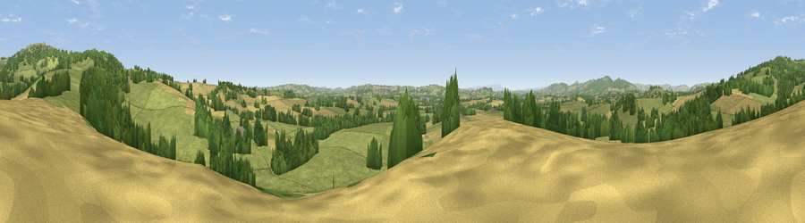

Viewpoint near Whitton
#15959 in England · top 43% of its area beats it · near WhittonThe view, rendered

A 360° render of this exact spot computed from the terrain model, tree cover and land cover — summer colours, afternoon light, calibrated against photographs of famous viewpoints. Real trees, hedges and buildings will differ in detail.
The panorama
Grey silhouette: terrain skyline in each direction (720 bearings, Earth curvature and refraction included). Dashed green: skyline with trees (+15 m) and buildings (+8 m) as obstacles. Blue strip: how far the ground is visible on each bearing.
Where the view opens
Wedge length = distance to the farthest visible ground on that bearing (vegetation-aware). Rings at 10, 25 and 50 km.
What fills the view
61% grassland · 20% cropland · 18% woodland ·
Angular shares of the visible panorama (visual magnitude), not map area. Landscape diversity 0.42 (0–1 Shannon).
Key numbers
More beautiful places nearby
The staircase of upgrades: each row has a higher view potential than everything closer. Driving times are estimates from straight-line distance, calibrated against real road routing — check an actual route before setting out.
| Place | Direction | Drive | Score |
|---|---|---|---|
| Viewpoint near Boraston | E · 2 km | ~5 min | 57.7 |
| Viewpoint near Hope Bagot | E · 2 km | ~5 min | 63.1 |
| Viewpoint near Hope Bagot | NE · 2 km | ~6 min | 73.7 |
| Viewpoint near Cleehill | NNE · 4 km | ~9 min | 82.3 |
| Titterstone Clee | N · 6 km | ~13 min | 83.8 |
| The Lawley | NNW · 27 km | ~43 min | 85.8 |
| North Hill | SE · 32 km | ~49 min | 86.8 |
| Worcestershire Beacon | SE · 33 km | ~51 min | 87.1 |
52.34604, -2.61540 · source: screening · position refined by local search. Computed location — check access rights before visiting.